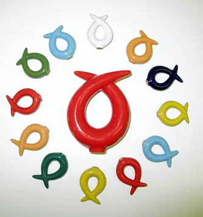

ГАРМОНИЗАТОР "КЛЮЧ ЖИЗНИ"

На основе «позитивного ключа» психограммы Я.С.Ибадовым в 2005 г. был создан гармонизатор «Ключ Жизни». Гармонизатор выполнен из природного материала в виде витков спирали, имеющих правостороннее – Ян и левостороннее – Инь направление витка. Принцип работы гармонизатора основан на изменении информационных составляющих поля объекта посредством эффекта формы. Это приводит к преобразованию потоков энергии при прохождении через устройство и переходу объекта в новое равновесное состояние гармоничного взаимодействия мужского (Ян) и женского (Инь) начал. Гармонизатор оказывает преобразующее и гармонизирующее воздействие на окружающую среду и биологические объекты, будучи помещенным в пространство жизнедеятельности объекта.
Сочетание янского и иньского «Ключей» образует двойную спираль, которая имеет большое значение как элемент жизни. Человек вписан в схему вселенской эволюции, вбирает в себя земные и небесные потоки Ци и соединяет, таким образом, небесное начало Ян и земное начало Инь внутри себя. Двойная спираль лежит в основе человеческого генетического кода и представляет собой графический образ ритма в природе. В совокупности оба «Ключа» являются универсальным гармонизатором, приводящим организм человека в состояние энергетического баланса.
На основании проведенных исследований, таких как:
-электроэнцефалография,
-электрокардиография,
-миография конечностей,
-реовазография конечностей,
-реоэнцефалограмма,
-вариабельность сердечного ритма,
-темнопольное сканирование крови,
-метод газоразрядной визуализации,
-определение торсионного фазового портрета и др.
было доказано, что применение гармонизатора «Ключ Жизни» позволяет:
- улучшить микроциркуляцию конечностей, восстановить нарушенный лимфоотток в органах и системах;
- наладить работу энергетических центров (чакр) человека;
- улучшить обменные процессы в организме и повысить иммунитет;
- облегчить процесс реабилитации при хронических заболеваниях;
- нормализовать и восстанавливать функции нейронов головного мозга;
- снять усталость стресс, головную боль, активизировать процессы мышления, памяти;
- структурировать воду, улучшая ее физико-химические и биологические свойства;
- восстанавливать работу сердечно-сосудистой системы;
- улучшить реологические свойства и основные функции крови: дыхательную, гомеостатическую, защитную;
- активизировать процессы омоложения организма на клеточном уровне.
- восстанавливать энергоинформационные характеристики различных объектов и веществ;
повысить эффективность сельскохозяйственного производства и др.
Преимуществами гармонизатора «Ключ Жизни» является:
- высокая эффективность;
- экологическая чистота;
- экономичность (восполняет ресурс от естественного фона Земли);
- широкая область применения;
- простота использования.
- возможность широкого применения в домашних условиях.
На основании гармонизатора «Ключ Жизни» совместно с Я.С.Ибадовым были разработаны методы и способы применения гармонизатора.
К ним относятся:
Очищение чакр.
Очищение энергетических каналов;
Очищение зрительных каналов;
Использование воды из «Ключа жизни»:
употребление внутрь;
инстилляции в глаза;
интраназальное использование воды;
трансдермальное применение;
аппликации на кожу;
принятие ванн с водой из «Ключа»;
втирание в биологически активные точки и др.
Массаж позвоночника с помощью гармонизатора:
- Инь-«Ключом»;
- Ян-«Ключом»;
- Инь- и Ян-«Ключами».
Кулон-гармонизатор «Ключ Жизни» для постоянного ношения.